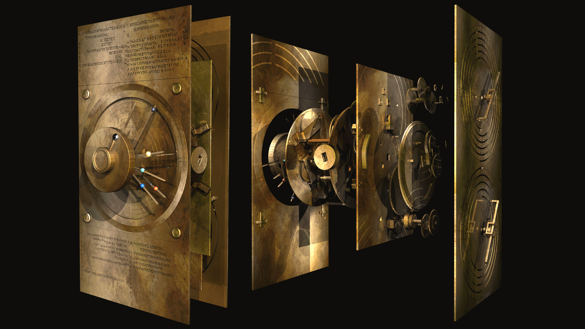
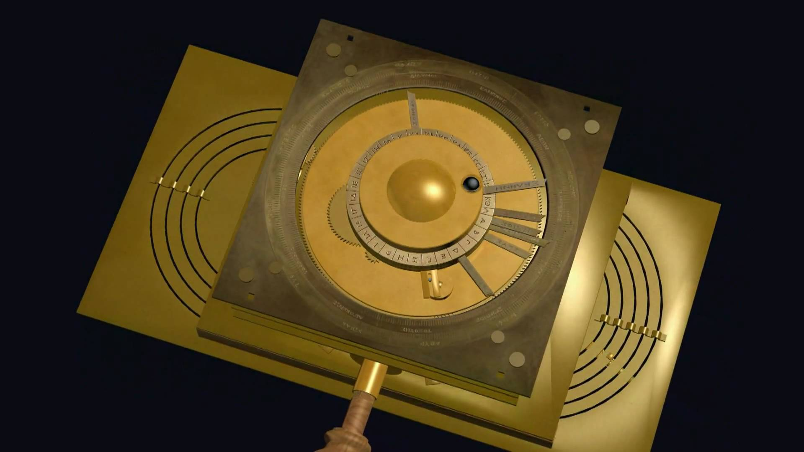
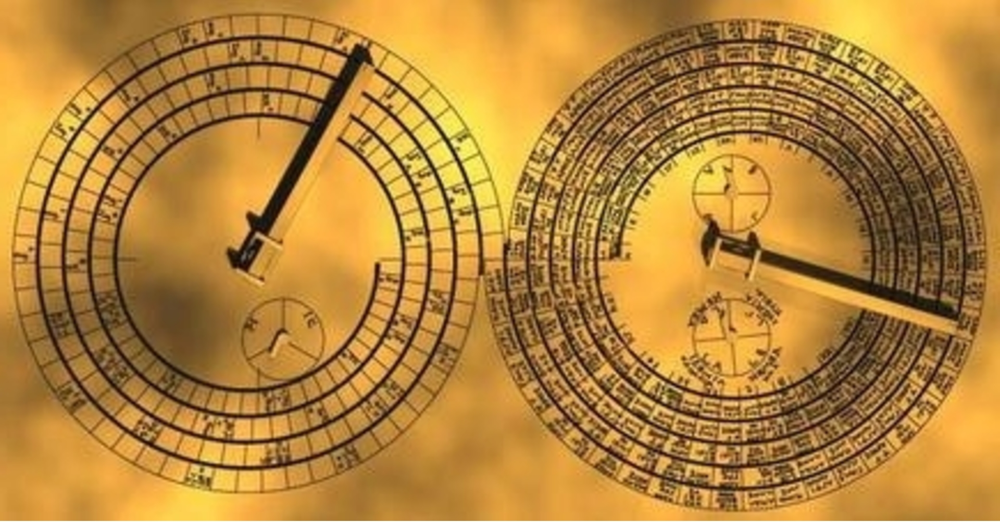

Mechanism Reconstructed
Over a hundred years ago, a group of divers discovered a ship wreck on the bottom of the Aegean Sea near the island of Antikythera.
Amongst several ancient sculptures and amphorae was an undistinguishable object that was taken to a laboratory to be further examined.
For years, scientists have been baffled by this mechanical structure and after a lot of studying, researchers deduced that this was a device dedicated to astronomical phenomena and was used to track cycles of the solar system.

Mechanism Front Face
The front dial has two coaxial circles projecting the path of the sun in our solar system.
Markings on the outer ring of the circles representing the 365-day Egyptian calendar, with a method of adding the 1⁄4 day every 4 years to compensate for leap years.
On the inner ring, there are designs of the ancient Greek Zodiac.
The position of the sun on the markings are an indication of the current date.
The moon and 5 planets that existed in ancient Greece had dials to represent them.
The dials were made close enough to the sun dial to predict where their positions were on any specific date.
A lunar pointer showed the position of the moon, considering the elliptical orbit.

Mechanism Back Face
On the rear face the mechanism had 2 displays, each with a dial.
The top display was used to track the days of a Metonic calendar, an ancient Greek calendar that was made by observing on the orbital periods of the Sun, Moon and Earth.
The dial points to the synodic month, counting from every new moon to the next one.
The cells contain the month names and if that month will have any of the main ancient Greek sporting games such as the Olympic games and other less known events.
The lower display is a Saros dial. This was used to predict eclipses of the sun and moon, and one Saros period after an eclipse the Sun, the Earth and the Moon would be aligned in a near straight line.
This could be used to predict the exact time of day of an eclipse.
1. Story cards and CRC cards - Basically all documentation of planning done for project.
2. All software – All the software,source code + everything else used.
3. Mid-term demonstration notes - Summary of what was discussed in this demonstration.
4. Report - Report and acknowledgement of all third-party sources used.